Static mockups for review, made 18 Nov 2026. Every company, person, email and number in them is made up; nothing is wired up and nothing has been built or deployed. Each page has tabs at the top to switch direction, state or screen, and shows the desktop (1440 x 900) and phone (390 x 844) side by side. A pick can mix, for example "Peak C with B's dark mode" or "J.A.R.V.I.S. A with B's left rail".
One front door for Matthew: a slim command bar with suggestion chips, answers that come back as cards with buttons, and around it the four inboxes, team requests from Jen, Brad and the crew, Today (morning check, Outbox, Peak follow-ups), builds running, the calendar and a Groceries link. Use the State tabs to see Idle, Listening, Thinking and Answer.
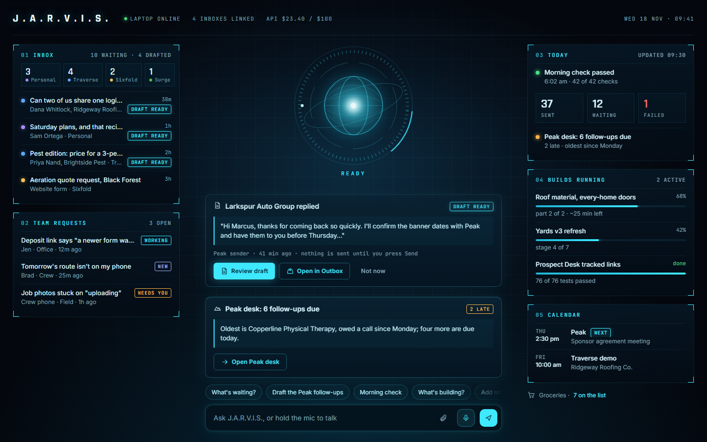
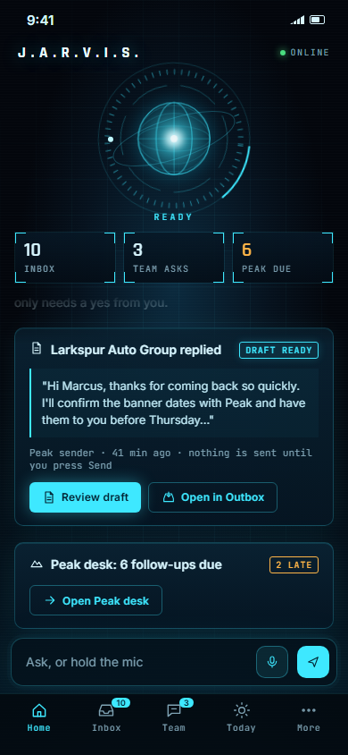
The cinematic one, closest to the brief. A wireframe globe sits in the middle with orbit lines and a tick ring. It breathes when idle, sends out ripples while listening, and spins a bright inner arc while thinking. The data panels sit either side in thin cyan line-work with corner brackets, numbered 01 to 05 like a heads-up display, with monospace labels. It looks the most like a film, but the globe takes height, so the chat has the least room of the three.
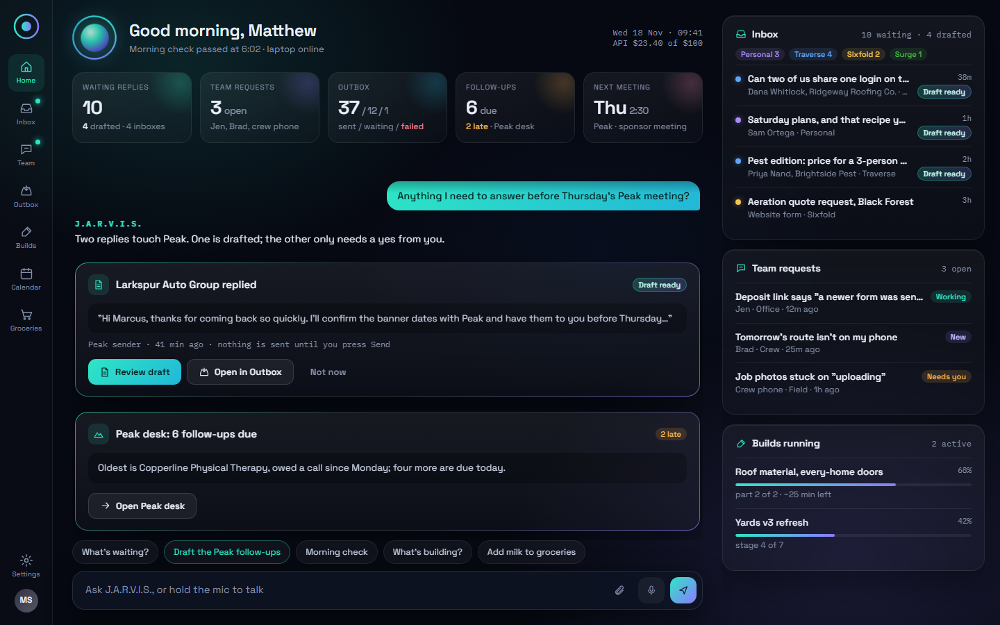
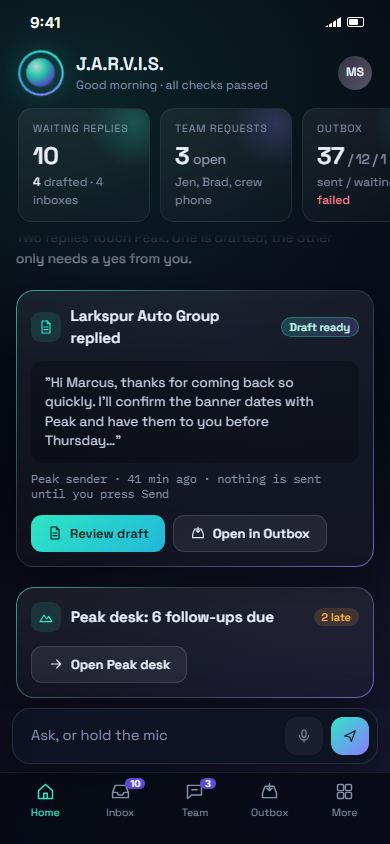
The everyday-app one. Frosted-glass cards on dark navy with teal and violet light. A small glowing orb sits beside "Good morning, Matthew" and turns pink when it hears you. Five headline numbers run across the top: waiting replies, team requests, Outbox, follow-ups and the next meeting. An icon rail on the left gives Inbox, Team, Outbox, Builds, Calendar and Groceries their own pages, which is where the merged Assistant's extra features would live. The chat gets the most width. It reads like a polished product and is the least sci-fi of the three.
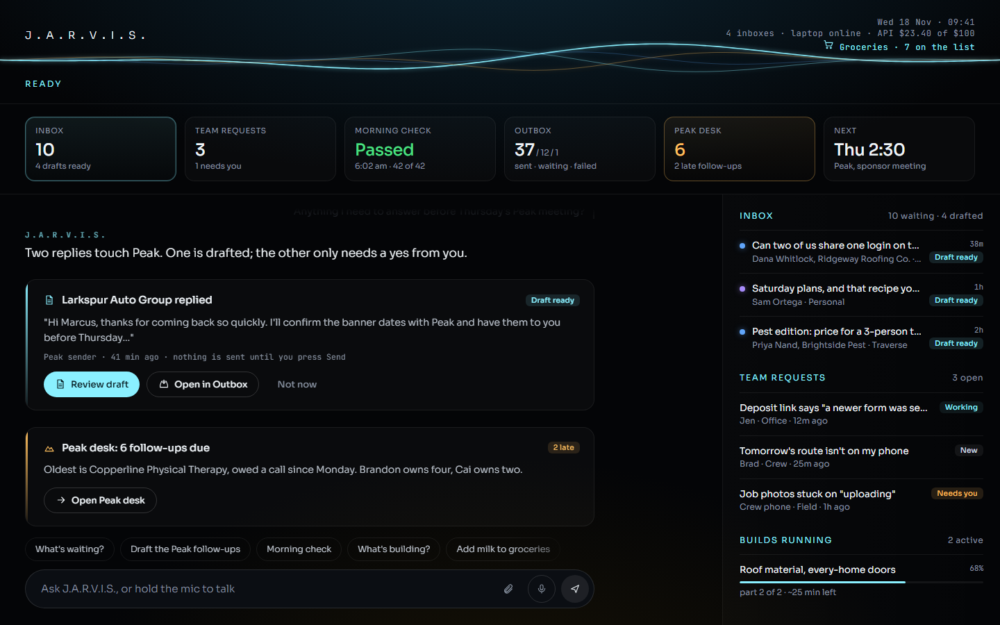
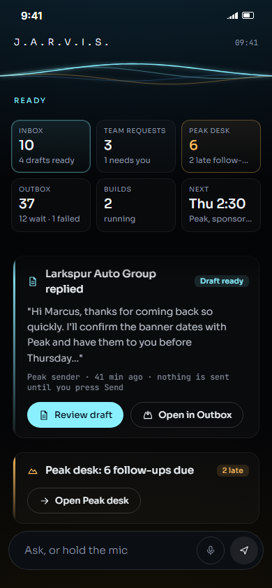
The calm, high-end one. A live waveform runs the full width of the top and stands for J.A.R.V.I.S.'s voice. It is a slow line when idle, jumps when you talk, and a pulse travels along it while it thinks. Six slim tiles sit underneath, and anything that needs you glows gold (Peak follow-ups here). Answers come back in larger, lighter type with a coloured edge. It is the quietest and has the most space; there's no orb.
These are original colours, not taken from any film. A cyan #3ee8ffA ground #03060cB teal #2ee6c5B violet #8b7bffC ice #8af0ffC gold #ffbf5e. The inbox dots keep the Assistant's existing colours: PersonalTraverseSixfoldSurge. The only name used is the app's own, J.A.R.V.I.S. There are no logos, no arc-reactor shapes and no film imagery; the globe, ring and waveform were all drawn from scratch.
Today, Pipeline plus Board, and a company card with the log buttons (No answer, Left voicemail, Talked, Emailed, Texted, More). Every direction has a Sponsors and an Expo tab, and a Light and a Dark mode.
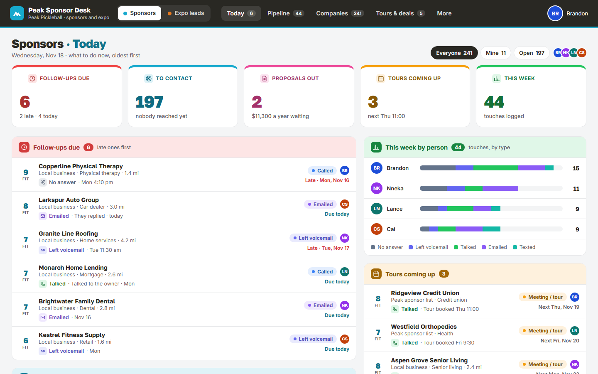
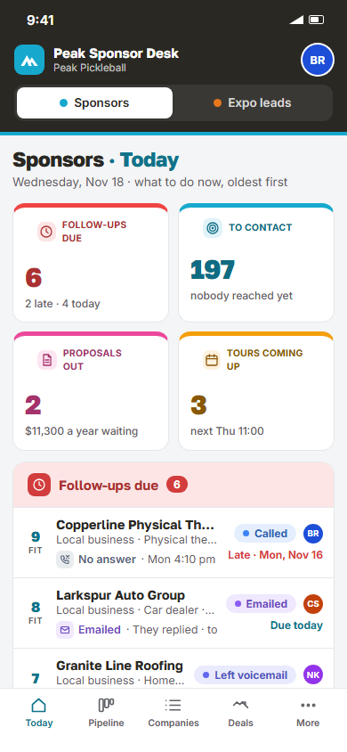
The closest to Peak's own website. A charcoal top bar uses Peak's logo colour, with a thick stripe under it: cyan on Sponsors, orange on Expo. Cards are white. Each section header is tinted in its own colour, so Follow-ups read red, To contact reads in the desk's accent and Tours read amber. Today tiles have a coloured top edge and a big coloured number. The calmest of the three, light first.
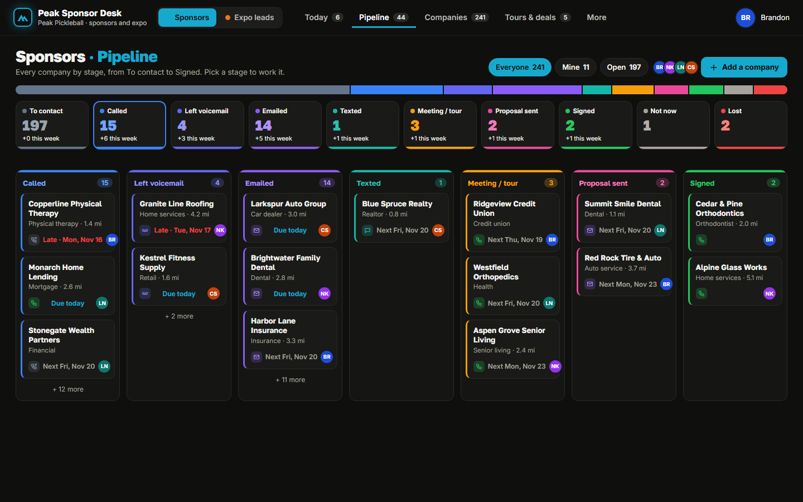
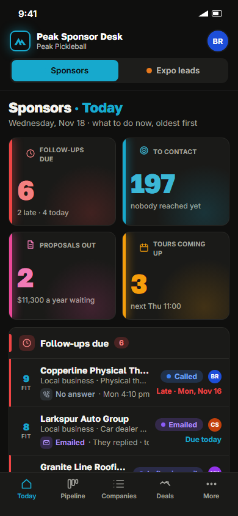
Dark first, for long sessions on the phone. Cards are near-black, and Peak cyan or orange glows on the active tab, the desk switch and the main buttons. Stage colours show as bright edges: a coloured bar on every tile, section and board column, and a coloured left edge on each board card. Late rows get a red edge. The most dramatic of the three, with a light mode included.
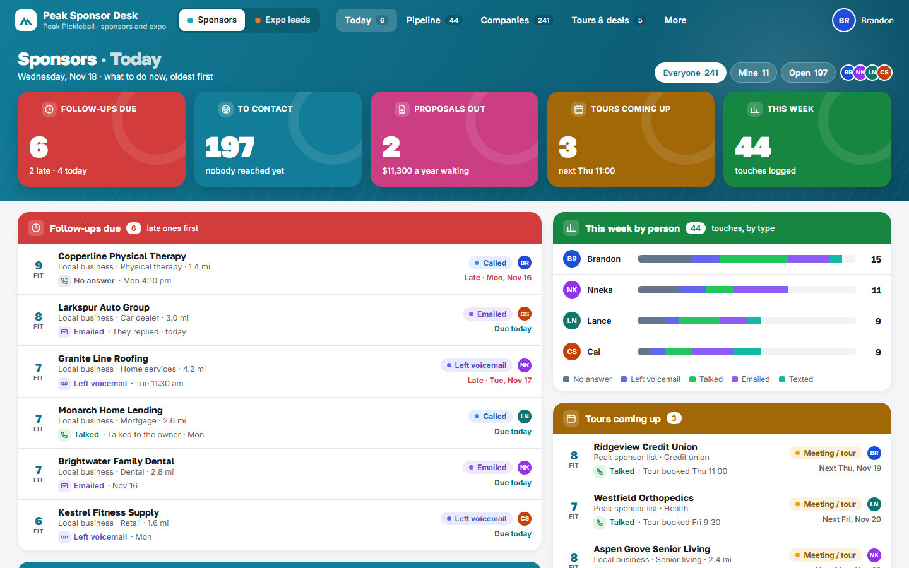
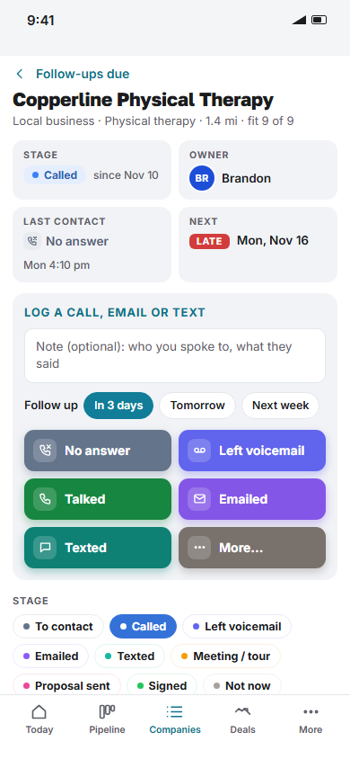
The loudest. A full-width colour band across the top (Peak cyan for Sponsors, Peak orange for Expo) holds the title, and the Today numbers sit on it as solid coloured tiles in big type. Section headers are solid colour bars, the funnel is a thick bar, and the log buttons are solid colour, so No answer, Voicemail, Talked, Emailed and Texted can be told apart at a glance. Sporty but still precise, in light and dark.
Read from peakpickleball.us on 18 Nov 2026. The site runs WordPress with the Avada theme, and its global palette sits in the theme's generated stylesheet as --awb-color1 to --awb-color8:
--awb-color5. The site uses it as --primary_color, --link_color, the button colour and the top header bar. Used as the Sponsors accent.--awb-color4, the site's second accent. Used as the Expo accent, so the two desks feel related but each has its own colour.--awb-color7. It is the colour of the logo wordmark (checked pixel by pixel in the logo file), the headings and the footer. Used for the top bar in A, and for headings and text.--awb-color8, the copyright bar. Used for B's dark ground and light-mode header. #434549 is the site's body text. #f7f7f7#eeeeee are the light greys, used for grounds.The stage and touch colours are not Peak's. They are a standard set of hues chosen so each one means the same thing on both desks: To contact / No answerCalled / ContactedLeft voicemailEmailedTextedMeeting / TourProposal / QuoteSigned / Booked / TalkedNot nowLost / Late.
Contrast: the page works out every text colour from these hues so it reaches at least 4.5 to 1 against what it sits on (WCAG AA). Light chips get a darker ink, dark mode gets a lighter one, and solid fills are darkened until white text passes. An automated check of all three directions, both desks and both modes (about 7,500 text elements) found nothing below that target. The text on C's gradient band was not measured, but it is white on a fill that passes on its own.
Peak's real logo is not used. The mountain mark in the mockups is a stand-in I drew. Peak's own black mountain logo could replace it if Peak is happy with that.